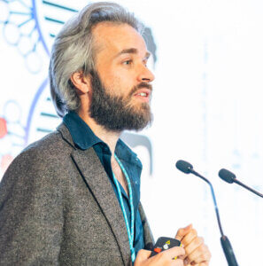
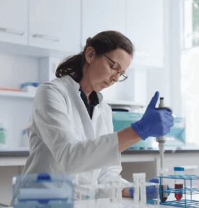
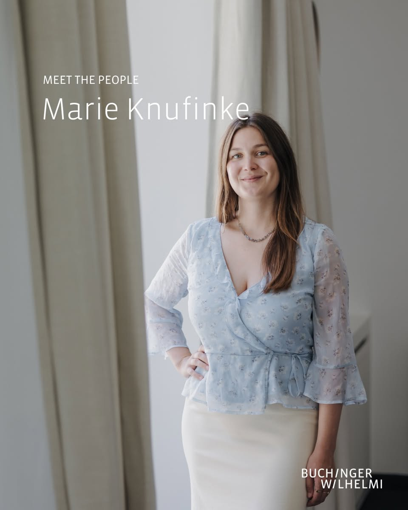

Buchinger Wilhelmi Science · Our People
The scientists and clinicians behind the world's most rigorous programme of research on therapeutic fasting.
Buchinger Wilhelmi clinics are the world's largest clinical centres for research on therapeutic fasting — the only fasting clinics that test and validate their therapeutic programme through clinical trials published in peer-reviewed journals. Fasting is one of the most powerful therapeutic interventions to promote longevity. By publishing our research, we empower society to understand the evidence behind fasting, in line with our mission: we empower people to live a healthy and fulfilling life.
Core Science Team
Senior Scientific Advisor
Dr. Wilhelmi de Toledo established the Buchinger Wilhelmi research department more than 20 years ago. Born in Geneva, she graduated in medicine in 1981 and discovered fasting at 18, dedicating her life to guiding long-term fasting patients. In 1986 she co-founded and chaired the German Medical Association for Fasting and Nutrition (ÄGHE e.V.) and has organised international medical congresses every two years since. She is also chairwoman of the Maria Buchinger Foundation, supporting research on therapeutic fasting.

Scientific Director
Dr. Mesnage is Scientific Director of the Buchinger Wilhelmi Clinics and a research fellow in the Department of Nutrition at King's College London, where he investigates the role of the gut microbiome in the health benefits of plant foods. He has published over 100 scientific articles cited more than 8,000 times and is among the top 1% of cited scientists worldwide for his work on the health effects of chemical pollutants. He serves as an expert for the French government and the European Parliament.

Head of Research
Dr. Grundler heads the research department, which she joined in 2014. She holds a Master of Science in Nutrition and was awarded her Dr. Rer. Medic. in March 2022 for her discoveries on the therapeutic effects of fasting for the prevention and treatment of metabolic diseases. Her work bridges clinical observation and rigorous scientific methodology, producing landmark publications on metabolic adaptation during prolonged fasting.

Research Scientist
Marie Knufinke joined the research team in 2022 and works closely with the Scientific Director. She is also affiliated with ETH Zurich, where she is completing her PhD thesis on food reintroduction after fasting — a critical and underexplored phase of the fasting protocol that shapes the durability of its metabolic benefits.
Also on the team
Alfred Holley
Junior Data Scientist
Katharina Stroppel
Clinical Study Coordinator
Global Research Network
Andreas Michalsen
Charité – Universitätsmedizin Berlin
A leading figure in fasting research and integrative medicine. Our long-standing collaboration supports clinical studies and the development of evidence-based fasting protocols.
Pierre Croisille & Magalie Viallon
CREATIS / University of Lyon
Experts in advanced MRI imaging. Together, we explore how fasting induces structural and metabolic adaptations in tissues, with a particular focus on liver and muscle physiology.
Borja Martínez-Téllez & Andrés Baena Raya
University of Almería
Specialists in exercise physiology and metabolic health. We collaborate on understanding how fasting and physical activity interact to improve metabolic flexibility and fat oxidation.
Massimiliano Ruscica
University of Milan
Expert in lipid metabolism. Together, we investigate how fasting influences lipoproteins and cardiovascular risk markers, with a focus on LDL dynamics.
Marco Witkowski
Charité – Universitätsmedizin Berlin
Researcher in immune and cardiovascular interactions. Our collaboration explores how fasting modulates immune responses and inflammation in clinical populations.
Stefan Jordan
University of Heidelberg
Focuses on metabolic regulation and clinical nutrition. We work together on the critical phase of food reintroduction, aiming to optimise recovery and long-term benefits after fasting.
Ferdinand von Meyenn
ETH Zurich
Specialist in epigenetics. Our joint work examines how fasting influences biological ageing and epigenetic reprogramming at the molecular level.
Georg Zeller
Leiden University Medical Center
Leads research in microbiome science. We collaborate to understand how fasting reshapes the gut microbiome and its links to metabolic health.
Michael MacArthur
Princeton University
Works at the interface of microbiology and computational biology. Our collaboration focuses on analysing complex microbial ecosystems and their adaptation to fasting.
Sebastian Hofer
Max Delbrück Center, Berlin
Studies immune cell dynamics. Together, we investigate how fasting influences immune cell function and systemic inflammation.
Nele Wagener
Charité – Universitätsmedizin Berlin
Contributes to clinical and translational research on fasting. Our work focuses on using the fasting box as a prehabilitation tool before hip surgery.